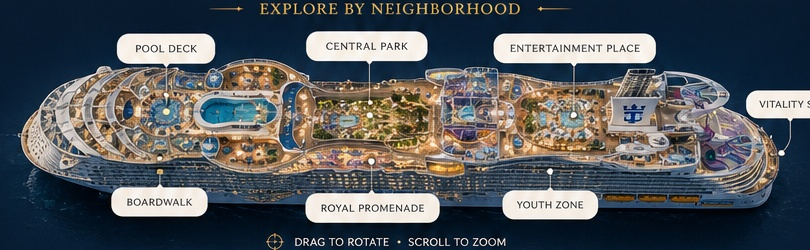

Neighborhood guide
Central Park
A lush, open-air neighborhood in the heart of the ship. Stroll through gardens, enjoy al fresco dining, live music, and handcrafted cocktails.

Venues in Central Park

Neighborhood guide
A lush, open-air neighborhood in the heart of the ship. Stroll through gardens, enjoy al fresco dining, live music, and handcrafted cocktails.